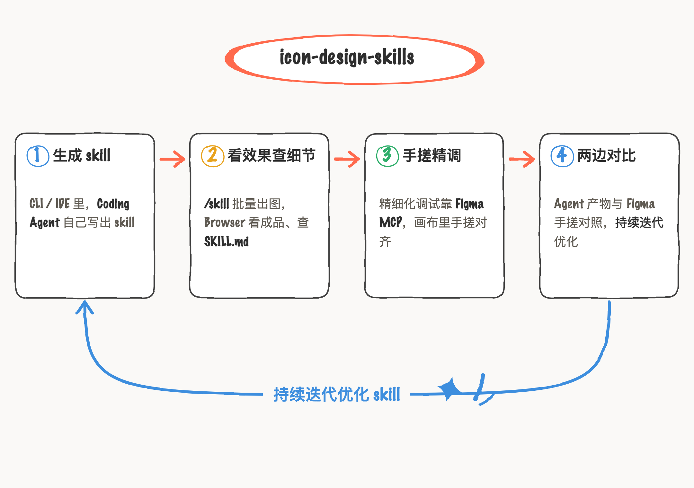
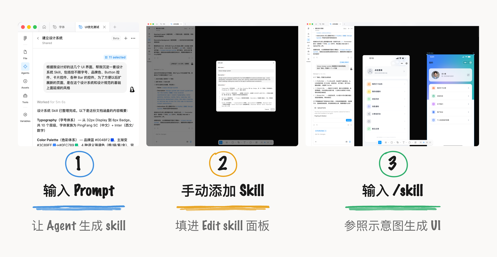
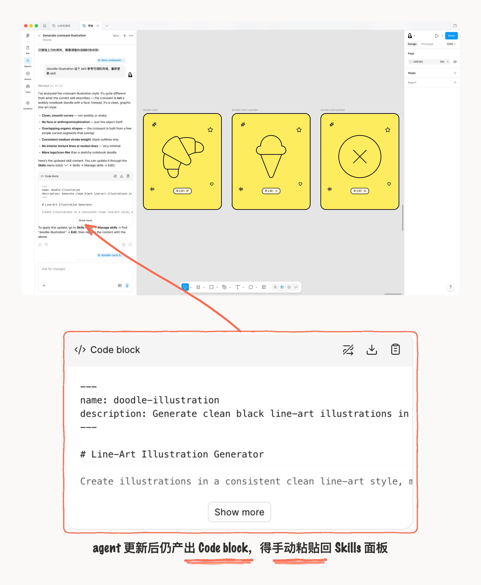
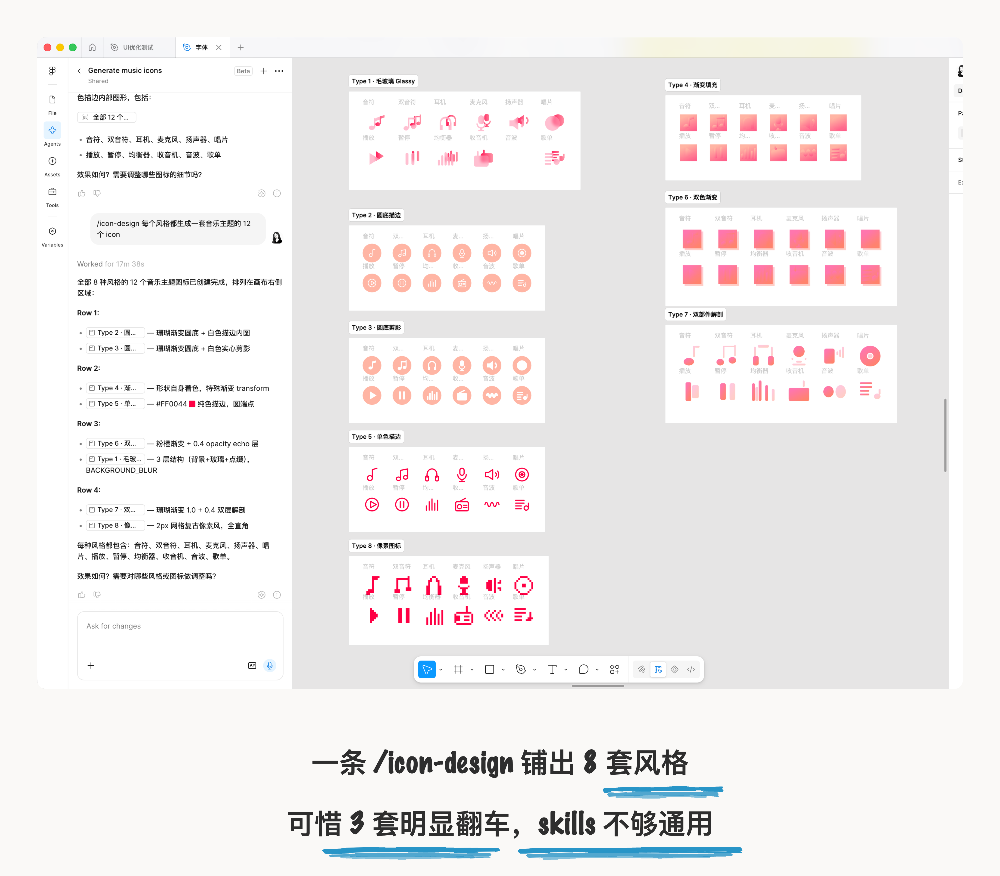
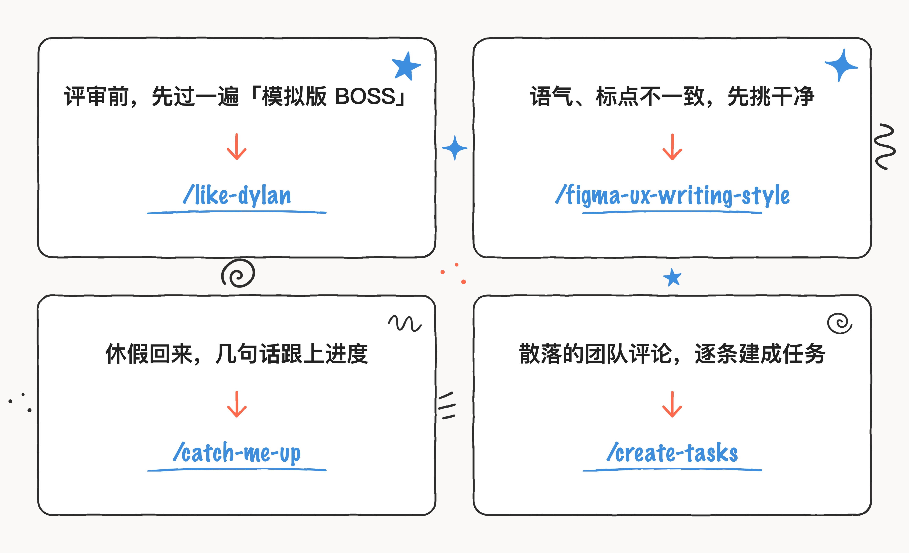
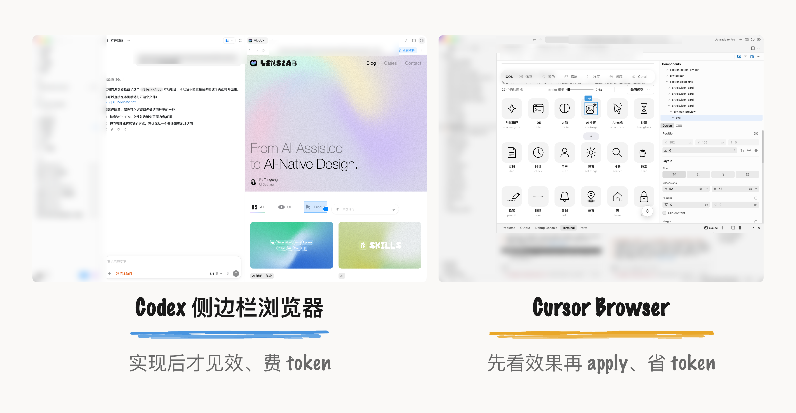

AI coding 时代，与 Agent 协作的媒介离不开 Skills。
查了一下，在 Agent 时代把 Skills 带火的是 Anthropic：2025 年 10 月推出 Agent Skills，到 2025 年 12 月，Anthropic 把 Agent Skills 开成了跨产品通用，首批接进来的就有 Figma、Notion、Canva 这些。
我的设计 skills 都是 Claude Code 写的。因为我肯定没 AI 写得好，不如就交给它，我负责提需求和验效果。
比如我有一套 skill 是 icon-design-skills，里面汇聚了各种风格探索；主要为了让 coding Agent 帮我批量生成，看效果就用 browser ，或者描边、色彩构成、尺寸这些设计细节，也可以从 SKILL.md 里查看；在 CLI 或者 IDE 一条斜杠命令 /skill 就能调用干活、快速生成更多；不过，要对生成效果精细化调试，还是要用到 Figma MCP，在 Figma 手搓更能高标准对齐，然后两边对比持续迭代优化 skill 生成效果。

现在， Figma 把 skills 搬进了画布。第一感觉是不用连 MCP 了（虽然连 MCP 也不麻烦，只需生成一串密钥），第二是 context 就在一个环境下、切换路径更窄、转译要更准。对于 Figma 这类聚焦设计场景的工具，我预期是它会比外部 Coding Agent 更懂我的设计工作流，更能提升“创意生成、精准修改、一致性”这些环节的创作生产力。
Figma 创建管理 Skill
还停在手动添加
先说创建这块，创建 Skills ，还是让 agent 执行 。比如我基于已经做好的一套 UI 生成一套蓝色主题的 UI design skill，直接在 chat 聊天框里，提需求：根据我设计好的这几个 UI 界面，帮我生成一套设计系统 Skill，包括但不限字号、品牌色、Button 控件、卡片控件、各种 Bar 的控件，生成 skills。鸡肋的是，agents 生成的是 md 文件或者 Code block（代码块），还需要人手动添加，很不 agent。

简单的风格生成的效果还行，再复杂一点的，就出 bug 了；我尝试让 agent 迭代 skill，这个过程和最终效果挺难把控的，仍然需要一点一点、每个组件验证调试。
而且，如果想要在 Figma 中更新 Skill，还是一样得手动添加。比如我让它帮我生成矢量插画风格/doodle-illustration-skill，更新一些细节之后，它仍旧产出 Code block 代码块，只能手动复制粘贴。Skill 是需要一个长期维护的技能，要是只能手动添加编辑，体验很糟，有点落后了。

由于现在 agents 在测试阶段，不消耗 AI credits，所以不好计算成本。
我后面试了下上传本地 skills ，过程丝滑、生成效果有折损 。我把那套 icon-design-skills 上传后，就可以直接在 Agent 对话里调用了，8 套icon、有 3 套生成的很差。跨 AI 产品的 skill 还是会有折损，或者说我的skill 还需要继续打磨，知道任何 AI 工具的生成效果都能不出错。

Figma Skills 最佳用处
是低成本团队协作
对于个人创意设计来说，或许目前在 Figma 创建 skills 不是首选；但围绕团队协作来说，可以提高工作效率与透明度。Figma 官方 在 7 月 1 日介绍了 Skills 与 agents 的团队 use Cases，重点在讲：画布就是整个团队一起干活的场所，Skill 放进来，共享和分发几乎零成本。这是与GitHub 和终端里的 coding agent Skill 最大区别。
每个团队、每个设计师都有自己一套做事方式，这些常常只存在于某个人脑子里。Skills 解决的就是产品设计工作中隐性习惯难以复用的问题：变成能重复、能共享、能扩展的指令。设计工作流的重复流程，最应该成为 skills Agents 执行。
Figma 举的第一个例子挺妙：把 CEO Dylan Field 平时的评论、过往的批评、留下的笔记喂给 Agent，它就摸清了 Dylan 这个人的反馈路数。设计师在正式评审之前，先让这个「模拟版 Dylan」把设计稿过一遍，做个提前准备。
比如设计团队不熟悉 UX Writing 的规范，那 UX Writing 团队就是做一个UX Writing Skill：把团队的写作风格指南输进去，让它先过第一轮，大写、标点这种不一致的地方先挑干净。
还有一个是新用户视角。让 Agent 用一个初次接触产品的人的眼光来看，找出那些做深了的人早就视而不见的摩擦点、缺掉的上下文。

还有一些工作流场景的 case：评审前要把背景对齐，就做一个 Crit Prep skill （评审准备清单），提前梳理重点信息。评审后要总结，就做一个 Crit Recap skill（评审总结），把散落的反馈整理成一份后续行动计划——顺手还能用 create-tasks 把评论逐条建成 Asana 任务。新来的人、或者休假回来跟不上节奏，就做一个 Catch-me-up Skill，问几句话就清楚了。
这些 case 属于信息协同效率问题，在画布上可以共享上下文、分发。一个人写好的 skill，团队里都能调用。
AI 工具一直在更新
打磨到自动化
在 Figma Agent 出来之前，我用 Figma Make 主要用于生成新方案探索，局限在于无法与无限画布上的 UI 连接，修改很麻烦、只能来回 copy，更别说自动化了；现在 agent 常驻左侧 sidebar，相比于 make，进化的就是解决这个需要频繁跳转的问题。
像 Codex 和 cursor 这类 Coding Agent 工具，正在将 Figma 的设计工具嵌入进去，也能做到精细化调整，我在做个人网站时，就是用的这俩工具。Codex 的侧边栏浏览器可以指哪打哪，选中元素、输入 prompt、enter 发送，就自动进入 AI chat、agent 开始执行，它的局限就是必须实现后才能看到效果，有点费 token；Cursor 的 browser 浏览器模式， 就更加省 token，可以先调整 design 里的参数、先看效果，确认了再 apply。

Figma Agent 有点像 Cursor browser 模式，优势是无线画布可以同时展示无数页面方案，延续了这个工作习惯的承载地。但是差距也很明显，Skills 的创建和管理费力。
设计师 Agent 工具使用仍然是分场景的：一个人精调设计，还是回终端和 IDE。skills 是需要长期磨出来的一套工具，配合最厉害的模型，才能省力点。而 Figma Skills 的创建、迭代、维护现在都太费力。但要把一套做事方式分给团队，画布就是它天然的优势，共享和分发几乎零成本。Figma 才刚搭起架子，打磨还得等下一版。
Claude Code 产品负责人 Cat Wu 表达过一个观点：如果一个自动化不能做到 100% 成功，那它其实不能算真正的自动化。100 次有 99 次正确，第 100 次可能出错。只有当 Skill 达到足够高的可靠性时，才能真正进入自动化工作流。
本文团队协作案例与功能说明来自 Figma 官方博客 Got Skills? Make the Figma Agent a Better Collaborator；Figma 内的 Skills 实操过程为本人尝试。